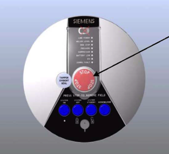

Cas d’urgence: Quench
Définition: QUENCH
‘Quenching’ est un terme se référant aux événements qui se produisent lorsque les liquides cryogéniques, servant à refroidir les bobines magnétiques bouillent rapidement, ce qui entraîne un échappement d’hélium très rapide en provenance du bain de cryogène. Cela signifie que les bobines supraconductrices cessent de l'être et redeviennent en état de résistance. Un ‘Quench’ sera en général accompagné d'une forte détonation s’apparentant à un bruit d’éclair,un sifflement ou à un son abrupt avec l'expulsion de gaz froid.
Un ‘Quenching’ peut se produire par l'activation du bouton d'arrêt de l'aimant, ou encore spontanément, suivant un défaut dans l'aimant lui-même. Le bouton d'arrêt d'urgence de l'aimant doit être utilisé que dans le cas où le champ magnétique provoque des blessures chez le patient ou le personnel, alors un arrêt du champ statique est nécessaire, ou si un incendie ou un autre événement imprévu nécessite l'accès rapide du personnel d'urgence à l'examen de la chambre. Notez cependant que lancer un ‘ Quench’ ne peut pas entraîner la suppression totale du champ magnétique, et un danger peut encore exister. Certains aimants étanchent que partiellement et le champ magnétique n’est donc pas totalement éliminé. Dans de tels cas, les mesures appropriées de sécurité doivent encore être prises lors de la manipulation d'objets ferromagnétiques près de l'aimant.
Un de nos manuels d'aimants suggère que l'intensité du champ est susceptible d'être réduite à \~ 20 mT après environ 20 secondes suivant l’initiation d'un Quench.
Kanal, MR Safety (traduction de version anglaise)
http://www.revisemri.com/questions/safety/quenching
Cas d’urgence: Quench
- Dans le cas d'un Quench dans l'unité d'IRM, le personnel de l’IRM doit évacuer la salle de l'aimant si possible, et le département de l’ UNF.
• Si quelqu'un est dans la salle d’IRM (dans l'aimant) ou dans la salle de l’IRM pendant le QUENCH, il faut sortir de la personne / les personnes hors de la salle d'IRM, puis aider l'individu (s) à l'aide des principes de répondant premiers soins.
• appeler 5555 pour toutes les urgences; identifier:
-
Quelle est la situation d'urgence :
Il y a un Magnet Quench dans la salle d'IRM C-0674
-
Où vous êtes :
Unité de Neuroimagerie Fonctionnelle
-
Qui êtes-vous :
Votre nom
• Une fois que tout le monde est sorti de la salle de l'aimant, il faut verrouiller la porte.
• Si l'équipe d'intervention d'urgence est présente, il faut s’assurer qu'ils sont conscients de l’existence d'un champ magnétique résiduel.
• Informer le personnel Unité de Neuroimagerie Fonctionnelle des événements.
• Le personnel de l’UNF informera la gestion, les Siemens service Uptime, etc.
Siemens Uptime Service 1-800-359-6709 Site #8010
• if faudra également faire un résumé écrit de l'incident (rapport d'incident)
Le bouton STOP
Ce bouton dé-énergise l’aimant supraconducteur (Quench).

*• Appuyer sur ce bouton en cas d’urgence dans le champ magnétique et notifier cela immédiatement au service Siemens *
*• Seuls les aimants supraconducteurs ont un commutateur d'aimant d'arrêt - les aimants permanents ne peuvent pas être éteints. *
Quench
Un Quench apparaît quand il y a une perte soudaine de la supraconductivité dans l’antenne magnétique résultant de l’augmentation de la température dans l’aimant.
Les substances cryogènes utilisées pour la supraconductivité se sont évaporées soudainement causant un changement
Les cryogènes utilisés pour la supraconductivité s’évaporent brusquement provoquant un changement du champ magnétique du en moins de 20 secondes.
Un Quench peut se produire suivant les événements suivants:
-
Mise en place du système de MR (montée en puissance ou en remplissant l'aimant)
-
Accident (tremblement de terre, incendie, etc.)
Un Quench peut être libéré par l'utilisateur d'une manière contrôlée en activant le bouton Magnet Stop.
Siemens Healthcare_ Safety_Guide_AE_4c.pdf p.15